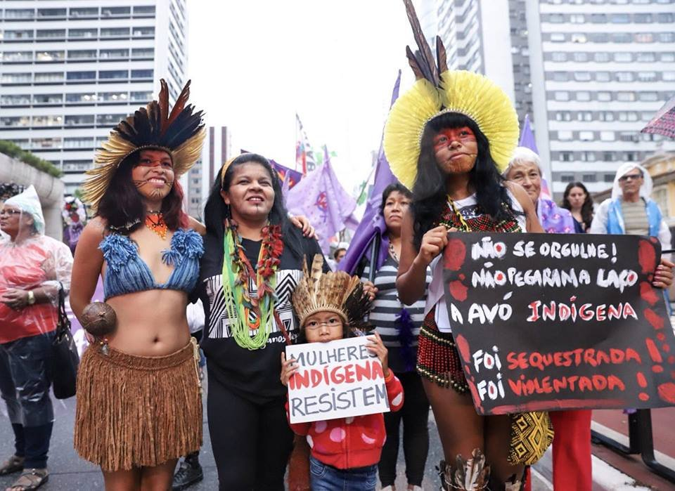
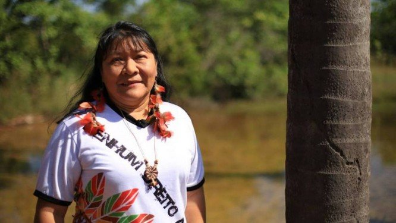
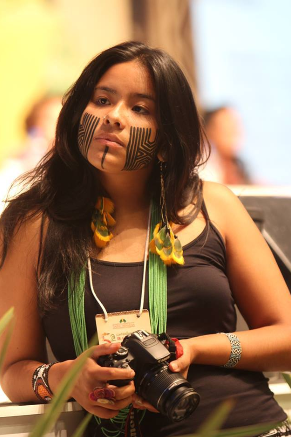
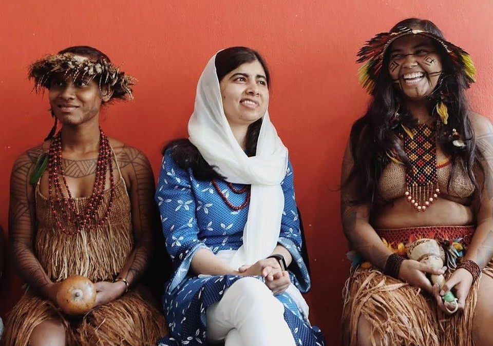

Mulheres indígenas: uma visão estereotipada e colonizada persistente no século XXI

Desde o Brasil colonial até os dias atuais, é explícito como os estereótipos a respeito das mulheres indígenas estão incorporados na mente de grande parte da sociedade, isto é, como no contexto atual atribuímos um padrão a estas mulheres, baseando-se no período colonial.
No dizer sempre expressivo de Gilberto Freyre, desde o início da colonização as índias servem somente para serem procriadoras e objeto sexual – uma visão em suma dos europeus na vinda às Américas. Diante deste cenário, é preciso criar um espaço de diálogo mostrando a importância de falarmos em mulheres, e, neste caso, fazendo um recorte às mulheres indígenas, assumindo pluralidades e especificidades. Outrossim, é fulcral romper com essas atribuições, assumindo que não há limites no que concerne suas funções, dentre outros aspectos, e expondo que essas mulheres existem e resistem de maneira sistemática no Brasil, visto que dificilmente encontram simpatia da população brasileira e que historicamente enfrentam o machismo e a violência de gênero.
Violência contra as mulheres indígenas
br>A população brasileira em sua grande maioria insere-se em uma cegueira total em relação a diversos temas, em particular, a violência contra mulheres das populações indígenas, que advém desde o início da conquista das Américas pelos europeus. As formas de violência não se limitam à física, englobam até a forma que pensamos e conceituamos à respeito dessas mulheres.
Historicamente, as mulheres são vítimas de abuso e de diferentes formas de violência. No contexto que situamos, é preciso fazer um recorte a respeito da violência contra mulher, pois é trivial que não se assuma as diversidades no que tange às mulheres, mas quando se fala em mulheres indígenas, a pluralidade é ainda maior, sendo assim necessário abordar as violências sofridas por essa particularidade de mulheres.
Exploração sexual. Violência física. Violência verbal. Mulheres tratadas como objetos sexuais. Nos dias atuais, esses tipos de violência são tratados como algo banal e isso pode ser explicado de múltiplos modos, mas deve-se em específico à insuficiência de conscientização por parte da população, que enfrenta esses gargalos sob um panorama – onde todos enxergam e não agem de maneira a cessar essa adversidade. Segundo dados do relatório da ONU (Organização das Nações Unidas), 1 em cada 3 mulheres indígenas são estupradas ao longo da vida, e, de acordo com Marcia Wayna Kambeba, geógrafa e ativista, “a mulher indígena sofre vários tipos de violência. Primeiro ela sofre por seu povo sendo afetado, marginalizado, discriminado. Depois, ela sofre como mulher e essa violência não é só física, ela é psicológica e social também.”
Em agosto de 2006, entrou em vigor e foi considerada pela ONU (Organização das Nações Unidas) a Lei Maria da Penha – Lei 11340/06 nº 11.340, com a criação de mecanismos a fim de coibir a violência doméstica e familiar contra a mulher. As mulheres lutam sistematicamente contra as inúmeras formas de violência, entretanto, a Lei Maria da Penha não atende as necessidades de muitas delas, cabendo ressaltar que esta problemática se agrava quando adentramos em uma minuciosidade: mulheres indígenas, que não se sentem representadas e, extraindo as palavras de Lívia Gimenes, advogada e autora da pesquisa ‘A construção Intercultural do Direito das Mulheres Indígenas a uma vida sem violência: A experiência brasileira’, “elas não são contra a lei, mas também não se reconhecem nela.”
Infere-se, portanto, que é preciso criar políticas públicas que reconheçam a especificidade das mulheres indígenas, uma vez que um dos obstáculos está em não conhecer que há vários perfis de mulheres. No mais, é primordial que a sociedade tome conhecimento deste revés, sobre o qual o mínimo que podemos fazer é divulgar e apoiar a luta dessas mulheres.
Empoderamento
Como mencionado, as mulheres são alvo histórico de repressão. No presente, as mulheres – sublinhando as indígenas – vêm buscando ter voz na sociedade, porém o caráter de assumir que a mulher vem tendo várias conquistas torna o conceito de “progresso” na sociedade brasileira uma fantasia, o que faz com que grande parte da população se acomode com tal realidade e deixe de lado esta luta. Outrossim, cabe salientar que há muito a se fazer para alcançar a linha de chegada no que concerne à igualdade social, política e econômica entre os sexos.

Em objeção aos estereótipos atribuídos às mulheres indígenas e ao olhar europeu – na visão deles estas servem somente para procriar – e, por fim, aos cidadãos brasileiros com fortes reflexos de uma sociedade patriarcal – característica que vem sendo refletida desde 1500 até a atualidade –, manifesta-se um símbolo de empoderamento de mulheres indígenas na atualidade: Joênia Wapichana – é a primeira mulher indígena a vencer uma eleição no Brasil (como deputada federal, em 2018). Além disso, Joênia foi também a primeira indígena no Brasil a exercer a profissão de advogada e se formou em Direito na Universidade Federal de Roraima. No mais, ela se engajou no âmbito político a fim de se dedicar à defesa das causas dos povos indígenas.
Taily Terena

Taily Terena pertence à etnia indígena Terena e faz parte do Conselho Nacional de Mulheres Indígenas representando os Terena e sua cultura, com a finalidade de empoderar cotidianamente meninas e mulheres indígenas, tornando-as conscientes acerca de seus papéis na sociedade e, ao mesmo tempo, incentivando-as a se atreverem a mudar o mundo.
Com o ambiente que Taily cresceu, ela sempre se engajou na luta pelos direitos dos indígenas (garantidos na Constituição Federal), lutando pela valorização de sua identidade e contra o preconceito que sua comunidade enfrenta constantemente.
Taily Terena e Joênia Wapichana são dois exemplos de avanços na sociedade brasileira, mas vale frisar que muitos avanços ainda deverão ocorrer. Esses dois paradigmas servem para atenuar toda camada da população a respeito dos papéis das mulheres indígenas na sociedade, não estabelecendo um limite para seus avanços e assegurando que as mulheres das tribos indígenas vem conquistando outros espaços dentro de sua etnia e participação na tomada de decisões dentro e fora de sua comunidade, uma vez que só homens podiam ser pajé e hoje há mulheres pajés que tem trazido seus saberes de cura. Por fim, segundo Taily Terena, “nós somos indígenas como identidade, mas podemos ser muito mais.”
Malala Yousafzai e os desafios no acesso e o direito à educação
Se retomarmos ao passado, é possível ver os avanços do presente. Entretanto, há muitas conquistas a serem feitas, e melhor: há muitas que deverão ser alcançadas e validadas na prática. No Brasil atual é explícito como a educação teve uma melhora se comparado ao período Imperial (1822-1889) – onde o estado emitia que todos deveriam ter acesso à educação gratuitamente. Porém, não houve relatos de que a classe mais pobre teve acesso a este direito, uma vez que somente filhos da elite da época tinham acesso, com muitos deles indo para Europa estudar e trazendo consigo ideais Iluministas que estavam à tona na época (a partir do século XVIII). Todavia, se pegarmos um ponto específico, é possível enxergar que mesmo tendo um progresso, há muitas disparidades no direito e acesso à educação no cotidiano de muitos brasileiros.
Tratados de modo subalterno desde séculos anteriores – quando nos aprofundamos nas mulheres, a situação se agrava mais. Carência de acesso aos seus direitos. Falta de políticas públicas representativas. Esses são alguns dos desafios enfrentados pela população indígena como um todo. Diante deste cenário, a educação entra como uma força poderosa.
Os principais desafios das meninas indígenas no Brasil está em obter educação, ter acesso a ela – onde enfrentam horas e horas para chegar na escola – e enfrentar a discriminação. O Brasil no dia 10/07/18 recebeu de braços abertos a paquistanesa, ativista pela educação e a mais nova ganhadora do Prêmio Nobel da Paz, Malala Yousafzai. Malala realizou muitas visitas e comemorou seu aniversário de 21 (vinte e um) anos visitando a tribo indígena dos povos Patoxó, Pataxó-hã-hã-hãe e Tupinambá, onde pôde conhecer mais este povo e seus desafios. Lá, Yousafzai pôde discutir como é a realidade da educação brasileira e como há muito trabalho a se fazer para melhoria disso e, principalmente, quando se fala da educação para meninas – destacando as indígenas.
A ativista pela educação veio ao Brasil com o objetivo de investir na educação brasileira e apoiá-la, a fim de acabar com as desigualdades. “Eu também estou aqui para destacar as questões que essas meninas jovens estão enfrentando. Existem 1,5 milhão de meninas no Brasil que estão fora da escola, e nós vemos essa grande disparidade quando se trata da população indígena e afrodescendente”, afirmou Malala.

Conclui-se, portanto, que medidas são necessárias para reverter este cenário. A educação é a ferramenta máxima de expressão para alcançar a liberdade e conscientização e, ao mesmo tempo, um mecanismo com capacidade de cessar os gargalos do Brasil. É por meio de investimentos em ativistas locais – como Malala Yousafzai fez, investindo em três brasileiras que passarão a fazer parte da Rede Gulmaki, uma iniciativa do Fundo Malala que apoia ativistas da área da educação de meninas e mulheres em vários países – que poderá ser trazida à população uma representatividade com o intuito de defender e lutar pelo direito e acesso à educação – por meio de diálogos com autoridades locais, a fim de salientar que deve haver educação de qualidade e que toda camada da população tenha acesso – e é também por meio de ações afirmativas representativas e pela validação das existentes, acarretando em uma quebra da incorporação do pensamento estereotipado e colonizado, formando cidadãos e cidadãs mais engajados, com direito e acesso à educação. No mais, a educação é um caminho para encorajar mais mulheres – e, no caso que situamos, mulheres indígenas – a se atreverem a mudar o mundo. Malala afirma: “Meu presente de aniversário é que todas as garotas possam ter acesso à educação segura e de qualidade”, e, por fim, "um livro, uma criança, um lápis e um professor podem mudar o mundo!”.
Fontes:
https://bit.ly/2JMgDhA
https://bit.ly/2FyaDIv
https://bit.ly/2BrpKiV